专题03 几何图形中的动态旋转问题的五种模型

目录
题型一：利用分类讨论思想解决几何图形中旋转多解问题 1
题型二：几何图形中动角求定值问题 7
题型三：几何图形中动角探究数量关系问题 14
题型四：几何图形中动角求运动时间问题 22
题型五：几何图形中动角之新定义型问题 30

题型一：利用分类讨论思想解决几何图形中旋转多解问题
1．（24-25七年级上·全国·期末）如图①，点O在直线 上，过O作射线
上，过O作射线 ，三角板的顶点与点O重合，边
，三角板的顶点与点O重合，边 与
与 重合，边
重合，边 在直线的下方．若三角板绕点O按
在直线的下方．若三角板绕点O按 的速度沿逆时针方向旋转一周，在旋转的过程中，第
的速度沿逆时针方向旋转一周，在旋转的过程中，第  时，直线恰好平分锐角
时，直线恰好平分锐角 （图②）．
（图②）．

【答案】6或24/24或6
【分析】本题考查了角平分线的定义，解题的关键是分两种情况进行讨论，分别依据直线恰好平分锐角，得到三角板旋转的度数，进而得到 的值．
的值．
【详解】解：
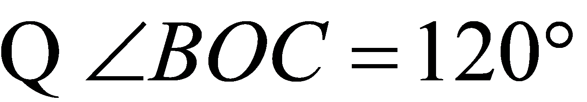
， ，
，
当直线恰好平分锐角时，如图：
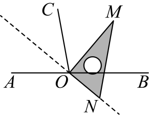
 ，
，此时，三角板旋转的角度为 ，
，
 ；
；
当在的内部时，如图：
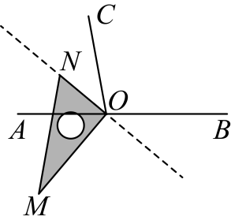
三角板旋转的角度为
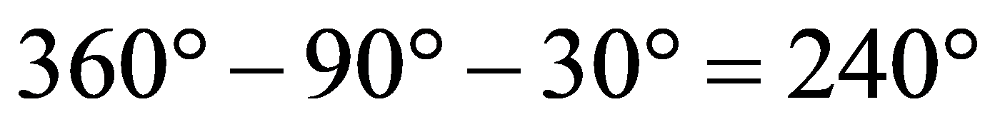
，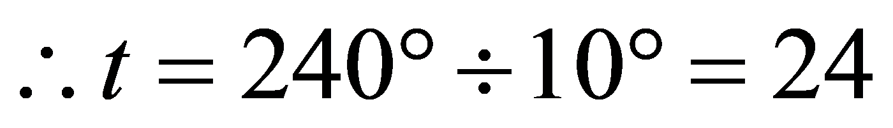
；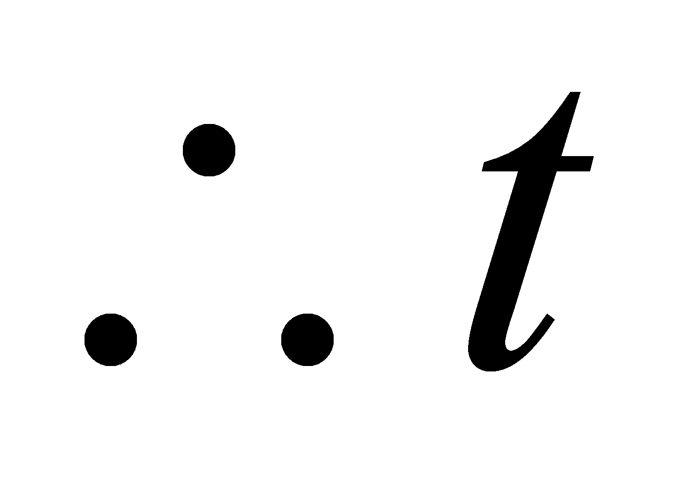
的值为：6或24．故答案为：6或24．
2．（24-25七年级上·辽宁沈阳·期末）如图，已知 ，射线
，射线  绕点
绕点  从
从 位置开始，以每秒
位置开始，以每秒 的速度顺时针旋转； 同时，射线
的速度顺时针旋转； 同时，射线  绕点从位置开始，以每秒
绕点从位置开始，以每秒 的速度逆时针旋转，并且当 与成
的速度逆时针旋转，并且当 与成
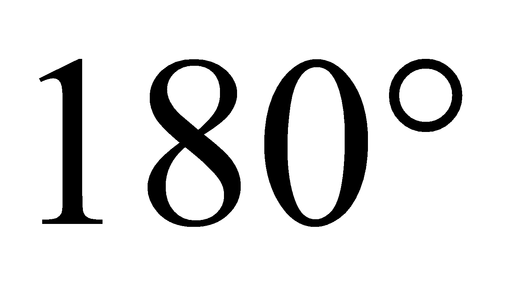
角时，与同时停止旋转．则在旋转的过程中，经过 秒，与的夹角是 ．
．
【答案】 或
或
【分析】设转动秒，与的夹角是，进行分情况画图 ，列方程即可得到结论．
【详解】设秒后，与的夹角是，
 如图
如图 ，
，
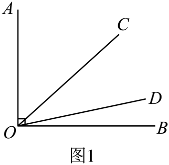
，∴
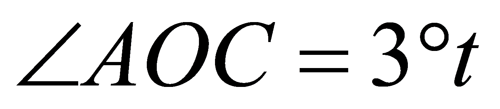
，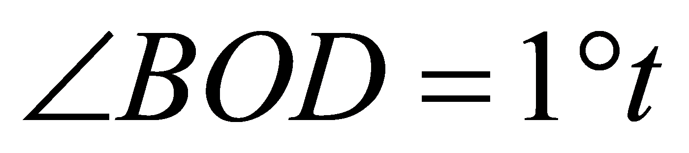
，∵，
∴
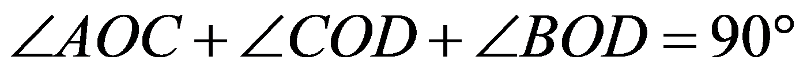
，即有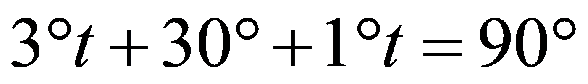
，解得：
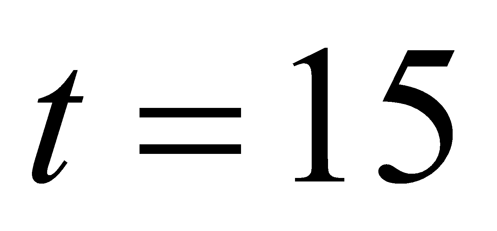
， 如图
如图 ，
，
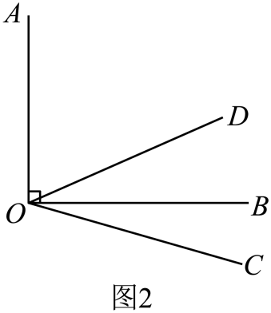
∴，，
∵，
∴
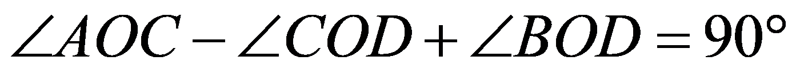
，即有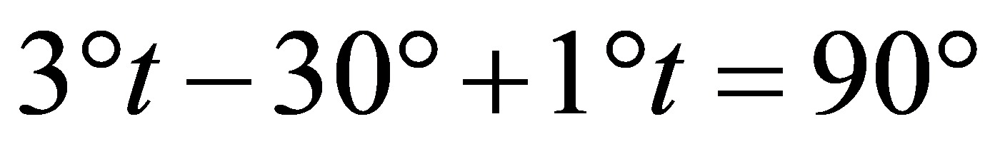
，解得： ，
，
综上可知：或，与的夹角是，
故答案为：或．
【点睛】此题考查了一元一次方程的应用，角的有关计算，解题的关键是确定已知量和未知量，找出它们之间的等量关系．
3．（23-24七年级上·江苏泰州·期末）如图，分别过直线上的点 和点
和点 作射线
作射线 、
、 ，
，
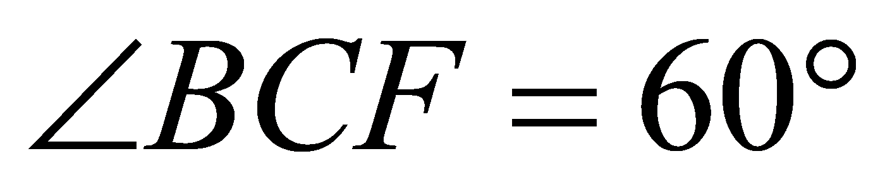
， ，射线
，射线 从开始绕着点以
从开始绕着点以 度/秒的速度顺时针旋转，射线
度/秒的速度顺时针旋转，射线 从开始绕着点以度/秒的速度顺时针旋转，在射线旋转一周的过程中，经过 秒，射线、射线所在的直线互相垂直．
从开始绕着点以度/秒的速度顺时针旋转，在射线旋转一周的过程中，经过 秒，射线、射线所在的直线互相垂直．【答案】 或
或
【分析】设经过 秒时，射线、射线所在的直线互相垂直，将线段，沿线段平移，使点与点重合且
秒时，射线、射线所在的直线互相垂直，将线段，沿线段平移，使点与点重合且
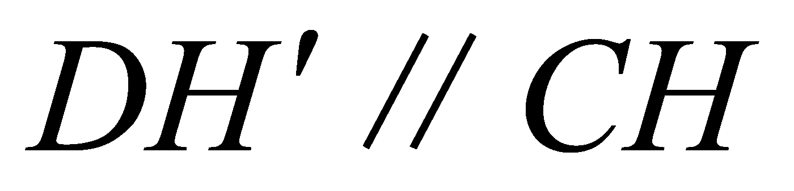
，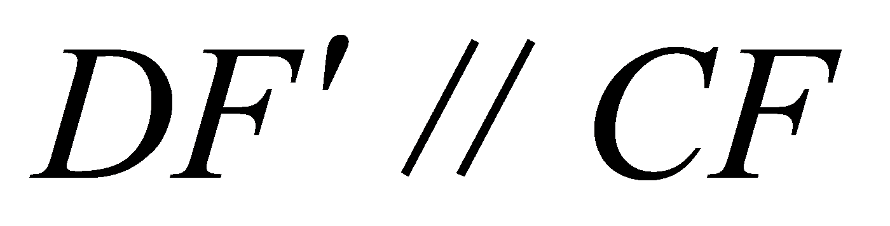
；根据题意，则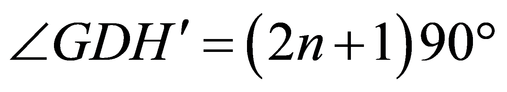
（ 为整数）时，
为整数）时，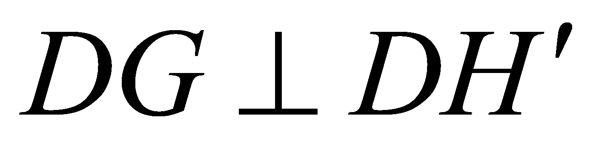
，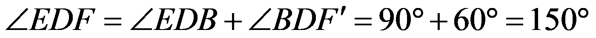
，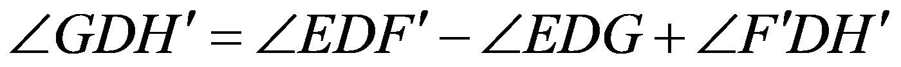
，等量代换，则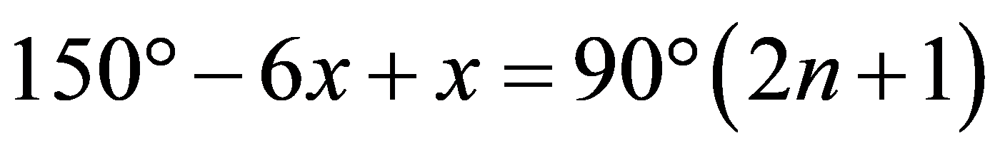
，解出，根据旋转一周，求出的取值范围，根据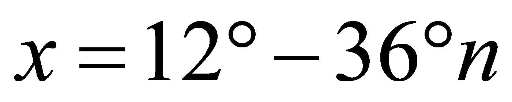
代入，确定的取值，即可．【详解】如图，所示
设经过秒时，射线、射线所在的直线互相垂直，
将线段，沿线段平移，使点与点重合且，，
当（为整数）时，，
∵，
∴，
∴（为整数），
解得：，
∵射线旋转一周，
∴
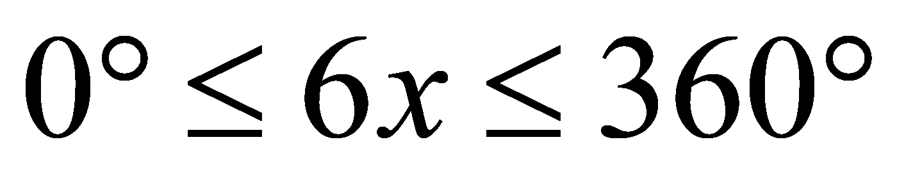
，∴
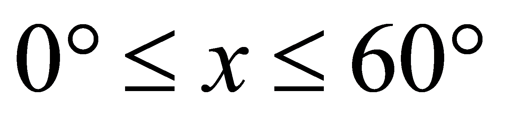
，∴
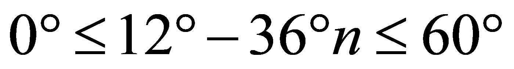
（为整数），∴
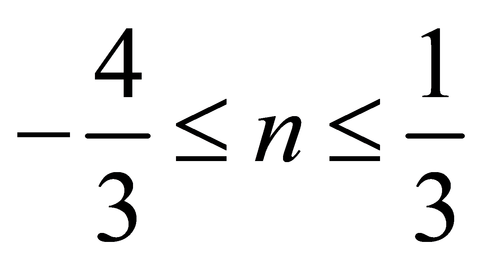
（为整数），∴为 ，
， ；
；
当 时，
时，
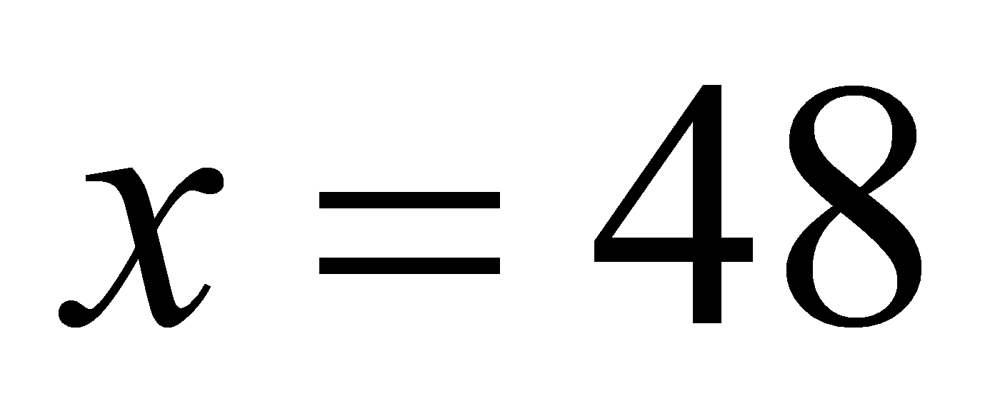
；当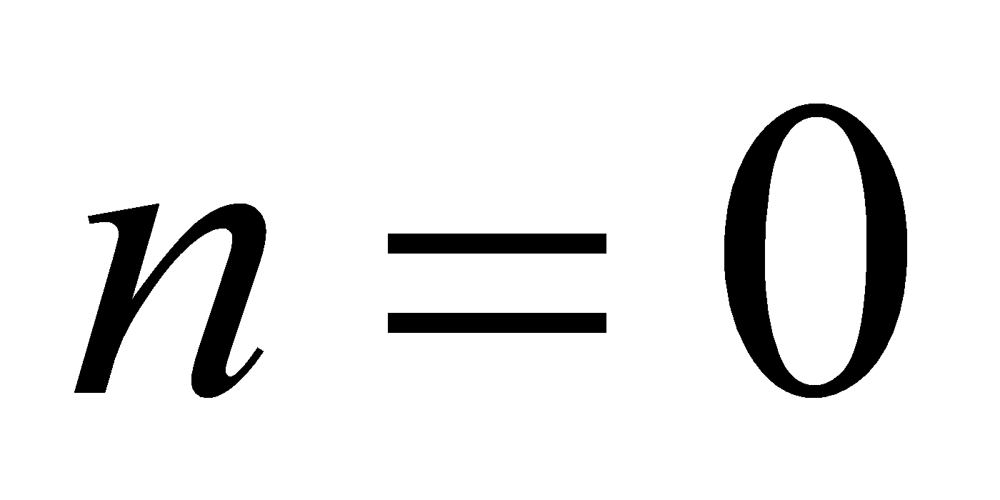
时， ；
；综上所述：经过或秒时，射线、射线所在的直线互相垂直．
故答案为：或．
4．（2024七年级上·全国·专题练习）如图1，直线 上有一点O，过点O在直线上方作射线，将一直角三角板
上有一点O，过点O在直线上方作射线，将一直角三角板 的直角顶点放在点O处，一条直角边在射线上，另一边在直线上方，将直角三角板绕着点O按每秒
的直角顶点放在点O处，一条直角边在射线上，另一边在直线上方，将直角三角板绕着点O按每秒 的速度逆时针旋转一周，旋转时间为t秒．若射线的位置保持不变，且
的速度逆时针旋转一周，旋转时间为t秒．若射线的位置保持不变，且 ．则在旋转过程中，如图2，当
．则在旋转过程中，如图2，当 秒时，射线
秒时，射线 与中的某一条射线恰好是另两条射线所夹角的平分线．
与中的某一条射线恰好是另两条射线所夹角的平分线．

【答案】2或8或32
【分析】分三种情况进行解答，即①射线是 的平分线，②射线是
的平分线，②射线是
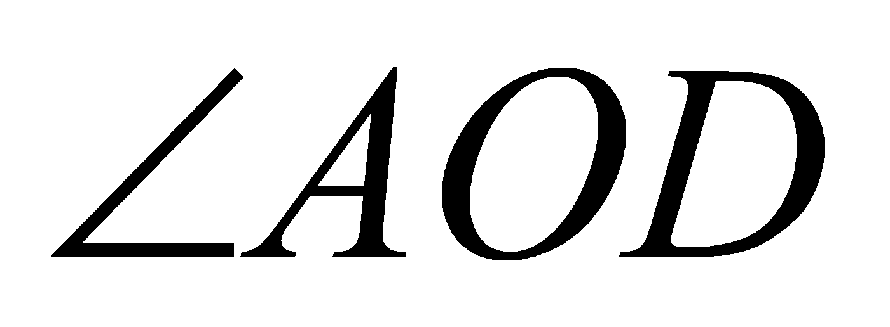
的平分线，③射线是 的平分线，根据角平分线的定义以及角之间的和差关系进行计算即可．
的平分线，根据角平分线的定义以及角之间的和差关系进行计算即可．【详解】解：当射线是的平分线时，
∵
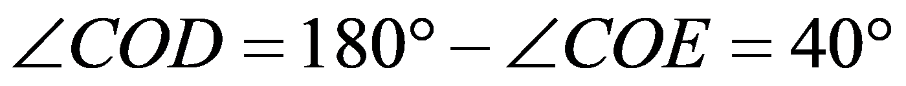
，∴
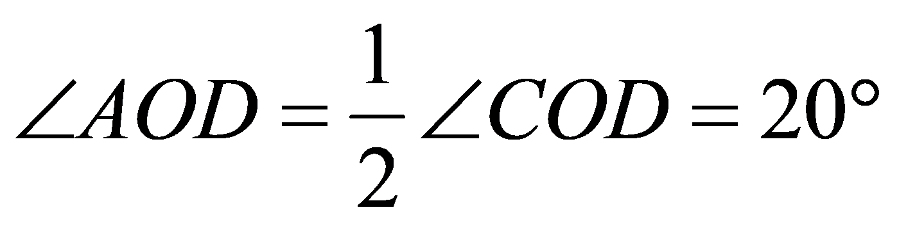
，∴
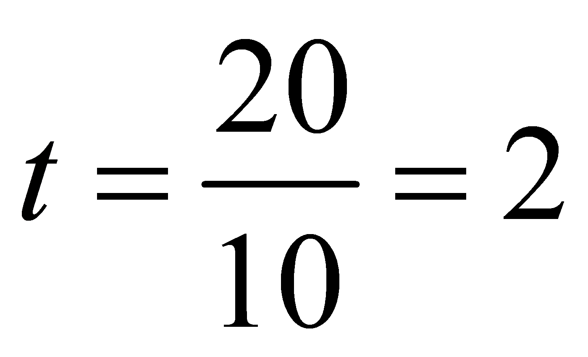
；当射线是的平分线时，
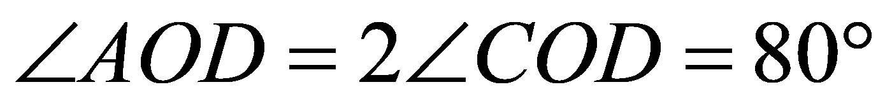
，∴
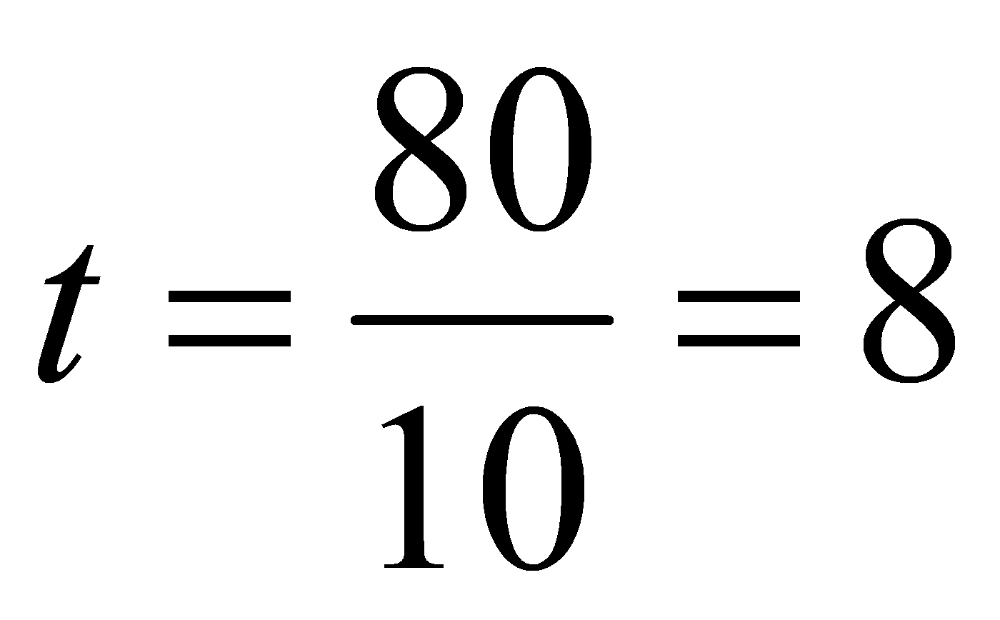
；当射线是的平分线时，
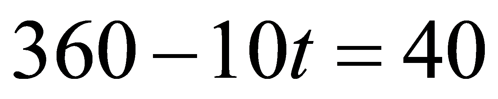
，∴
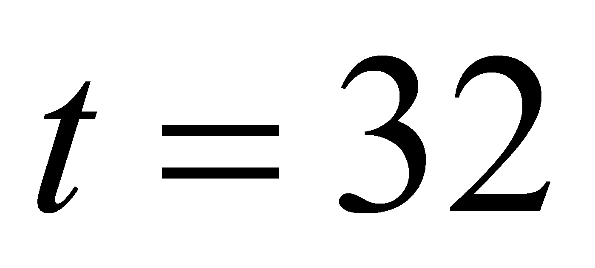
，故答案为：2或8或32．
【点睛】本题考查角平分线，理解角平分线的定义是正确解答的前提．
5．（24-25七年级上·河北石家庄·期末）三角板是我们常用的数学工具．如图①，先用三角板画出了直线 ，然后将一副三角板拼接在一起，其中
，然后将一副三角板拼接在一起，其中 角
角 的顶点与
的顶点与 角
角
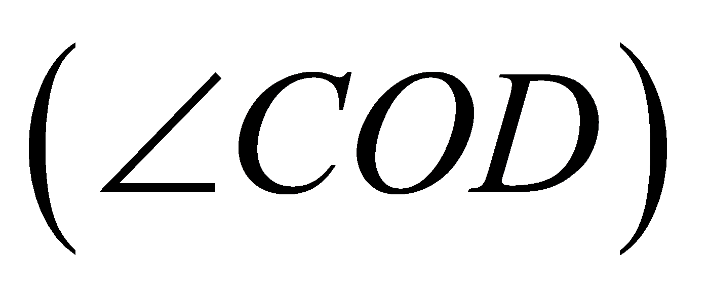
的顶点互相重合，且边、都在直线上．
(1)以下各角中，图①不含有的角是________（填序号）；
①，② ，③
，③ ，④
，④ ，⑤
，⑤ ，⑥
，⑥
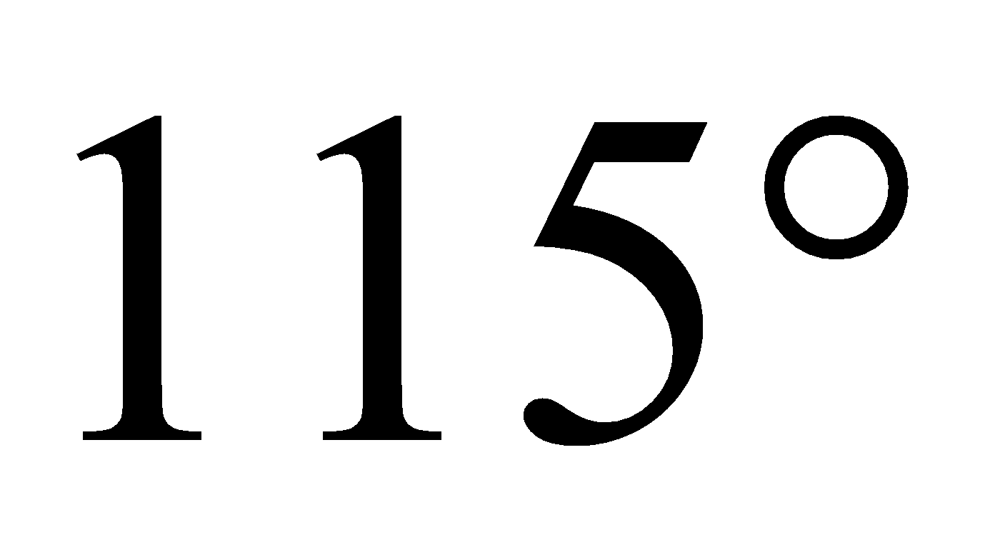
．(2)已知：射线、分别为 和的角平分线，如图②，求
和的角平分线，如图②，求 的度数；
的度数；
(3)固定三角板 不动，将三角板
不动，将三角板 绕点按顺时针方向旋转一周，旋转角为
绕点按顺时针方向旋转一周，旋转角为
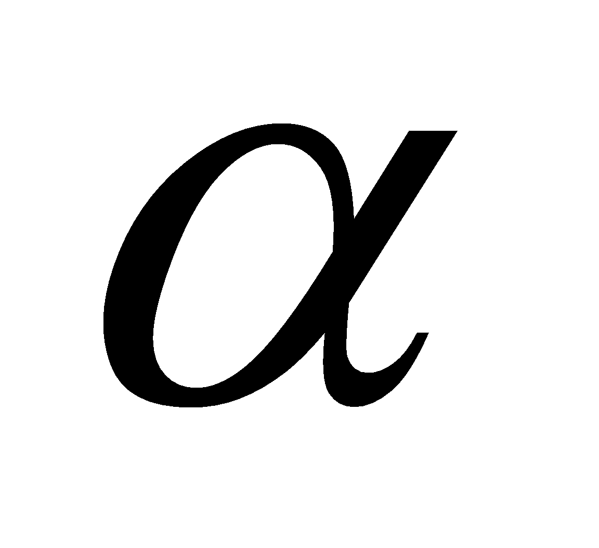
（如图③），当射线、、三条射线中一条射线为其它两条射线组成的角（小于平角）的角平分线时，直接写出旋转角的度数．【答案】(1)④⑥
(2)
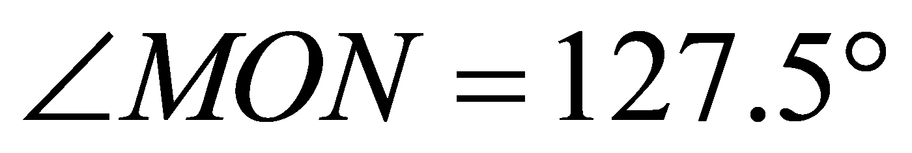
(3)或
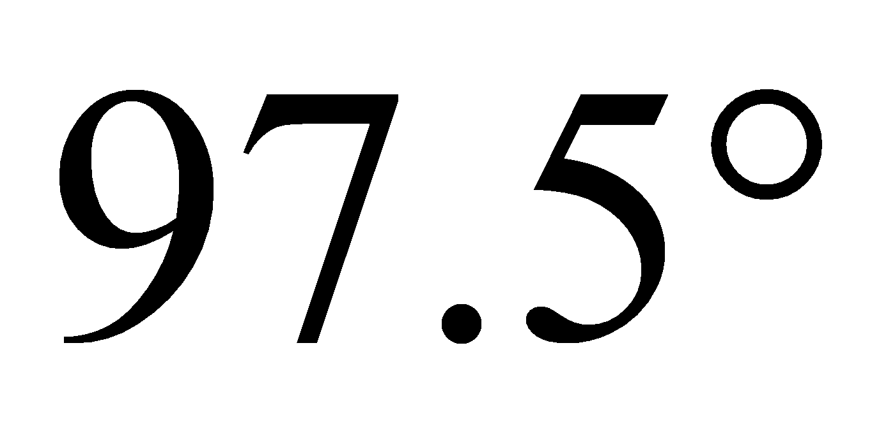
或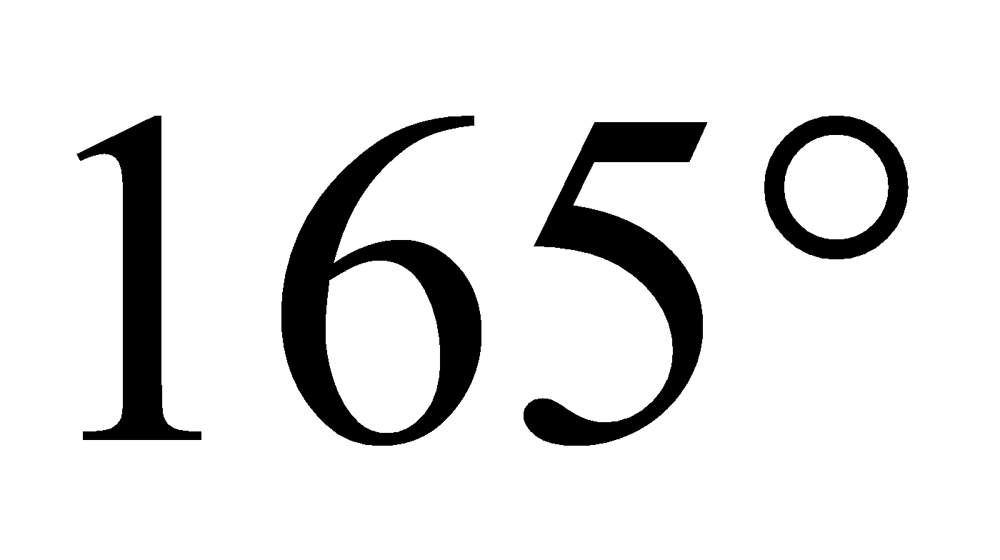
【分析】本题考查了角的和差、角平分线，熟练掌握与角平分线有关的计算是解题关键．
（1）根据三角板可得
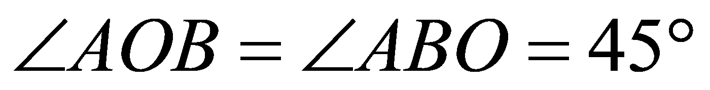
， ，
， ，
，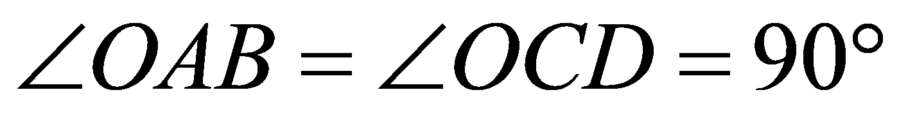
，再根据角的和差求出 ，，
，， 的度数，由此即可得；
的度数，由此即可得；（2）先根据角平分线的定义可得
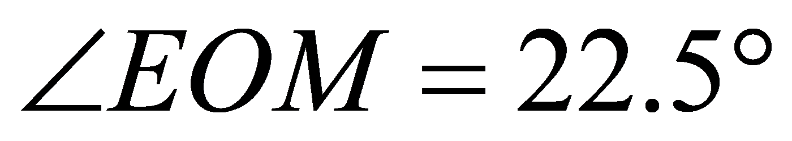
，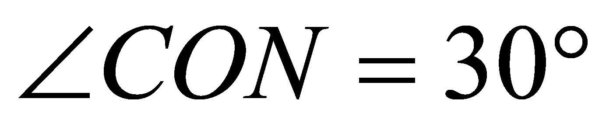
，再根据角的和差求解即可得；（3）分三种情况：①当射线是的角平分线时，②当射线是的角平分线时，③当射线是的角平分线时，根据角平分线的定义求解即可得．
【详解】（1）解：由题意得：，，，，
∴
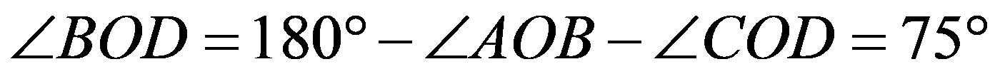
，∴，，
综上，图①不含有的角是④⑥，
故答案为：④⑥．
（2）解：∵射线为的角平分线， ，
，
∴，
∵射线分别为的角平分线，，
∴，
∴．
（3）解：①如图，当射线是的角平分线时，
∴，
∵，
∴旋转角；
②如图，当射线是的角平分线时，
∴，
∵，
∴旋转角；
③如图，当射线是的角平分线时，
∴，
∵，
∴旋转角；
综上，旋转角的度数为或或．
题型二：几何图形中动角求定值问题
6．（25-26七年级上·全国·课后作业）如图，在同一平面内， 是绕点按顺时针方向旋转得到的，是的平分线，
是绕点按顺时针方向旋转得到的，是的平分线， 是的平分线．
是的平分线．

(1)若 ，即，则
，即，则 ________，
________， ________．
________．
(2)在的变化过程中， 的度数是一个定值吗？若是定值，请求出这个值；若不是定值，请说明理由．
的度数是一个定值吗？若是定值，请求出这个值；若不是定值，请说明理由．
【答案】(1)，
(2)的度数是一个定值，为．
【分析】（1）利用角平分线的定义，寻找各角之间的关系，然后进行相关运算；
（2）根据角平分线的定义，寻找各角之间的关系，运用由特殊到一般的思想方法，得出 为一个定值．
为一个定值．
【详解】（1）∵ ，
，
∴ ，
，
∴ ，
，
∵ 平分
平分 ，
，
∴ ，
，
∵ 平分
平分 ，
，
∴，
∴ ．
．
故答案为： ，
， ．
．
（2）在的变化过程中，的度数是一个定值．
∵是的平分线，
∴．
∵是的平分线，
∴，
∴，
即的度数是一个定值，为．
【点睛】本题考查了角平分线，解题的关键是寻找各角之间的关系进行运算．
7．（24-25七年级下·广东深圳·开学考试）如图，将两块直角三角板的角和一个 角的顶点
角的顶点 叠放在一起，将三角板
叠放在一起，将三角板 绕点旋转，旋转过程中，三角板的直角边
绕点旋转，旋转过程中，三角板的直角边 始终在
始终在 的内部，在旋转过程中
的内部，在旋转过程中
(1)若 时，
时， ______°；
______°；
(2)善于思考的小明发现，在旋转过程中，
① 和②
和② 的度数均各为一个定值，请你写出这两个定值，
的度数均各为一个定值，请你写出这两个定值，
定值：①______；②______．
(3)作 和的平分线
和的平分线 ，，在旋转过程中
，，在旋转过程中 的值是否发生变化？若不变，请求出这个定值；若变化，请求出变化的范围．
的值是否发生变化？若不变，请求出这个定值；若变化，请求出变化的范围．
【答案】(1)9
(2)，；
(3)
【分析】（1）由角的和差关系可得：，再代入数据可得答案；
（2）由在的内部，如图，，，再代入数据可得答案；
（3）由角平分线的定义可得，，结合（1）得：，（2）得：，可得，从而可得答案．
【详解】（1）解：∵，，，
∴，
∴；
（2）∵在的内部，如图，
∴
；
∴
 ；
；
（3）∵，分别平分和，
∴，，
∵由（1）得：，
由（2）得：，
∴
．
【点睛】本题考查的是角的和差运算，角的动态定义，角平分线的定义，熟练的利用角的和差运算是解本题的关键．
8．（24-25七年级下·福建莆田·期中）问题情境：如图，直线， 相交于点．把分成两个角，且
相交于点．把分成两个角，且 ．
．

问题提出：
(1)若 ，求
，求 的度数．
的度数．
(2)如果，平分 ，那么是
，那么是 的平分线吗？试说明理由．
的平分线吗？试说明理由．
问题解决：
(3)若 ，则
，则 是否为定值？若是，请求出定值：若不是，求说明理由．
是否为定值？若是，请求出定值：若不是，求说明理由．
【答案】(1)
(2)是，理由见解析
(3)定值，
【分析】（1）由对角相等，先求出．然后根据即可求解；
（2）结合（1）的结论，求出，然后再求 即可作出判断；
即可作出判断；
（3）设，则，然后用的代数式把， 表示出来，即可求解．
表示出来，即可求解．
【详解】（1）解：，，
，
又，
；
（2）由（1）知当时，，
，
 平分，
平分，
，
，
是的平分线；
（3）是定值，理由如下：
设，
则，
，
，
，
，
，

．
【点睛】本题考查了角度的和差倍分关系，角平分线的定义，关键是掌握对顶角相等，角平分线的意义，用代数式表示角的和差倍分关系．
9．（24-25七年级上·山西运城·期末）活动课上，王老师将一副三角尺按图①位置摆放在直线上，45°角的顶点与60°的顶点重合于点，斜边与直角边在直线上，然后将直角三角尺 绕点按15°/秒的速度顺时针方向旋转一周，设旋转时间为秒．
绕点按15°/秒的速度顺时针方向旋转一周，设旋转时间为秒．
(1)旋转前， _________，_________；
_________，_________；
(2)“希望”小组同学发现：当 时，是的角平分线，请利用图②说明理由；
时，是的角平分线，请利用图②说明理由；
(3)“飞翔”小组同学发现：若直角三角板旋转至如图③的位置时，为定值．请你判断是否正确，如果正确，请求出该度数；如果不正确，请说明理由．
【答案】(1)，
(2)见解析
(3)正确， ；
；
【分析】本题考查了角的和差和角平分线，解题关键是正确识图，准确进行计算；
（1）利用平角减去相邻的角即可；
（2）求出 的度数，再通过计算说明即可；
的度数，再通过计算说明即可；
（3）分别表示出，再求它们的和即可．
【详解】（1）解：，
，
故答案为：，．
（2）解：直角三角尺绕点按15°/秒的速度顺时针方向旋转，当时，
，则,
∵,
∴是的角平分线．
（3）解：正确，；
直角三角板旋转至如图③的位置时，
，，
．
10．（24-25七年级上·江西抚州·期末）如图（1），点为直线上一点，过点作射线，使 ．将一直角三角板的直角顶点放在点处，一边在射线上，另一边在直线的下方．
．将一直角三角板的直角顶点放在点处，一边在射线上，另一边在直线的下方．
(1)将图（1）中的三角板绕点按每秒的速度沿逆时针方向旋转秒，此时恰好第一次平分钝角，则的值为多少？
(2)将图（1）中的三角板绕点逆时针旋转至图（2），使一边在的内部，直线恰好平分，问：直线是否平分？请说明理由．
(3)将图（1）中的三角板绕点O顺时针旋转至图（3），使在的内部，请探究：
① 与之间的数量关系，并说明理由．
与之间的数量关系，并说明理由．
②的值是否为定值，如果是，请求出这个定值是多少？如果不是，请说明理由．
【答案】(1)
(2)直线平分，理由见解析
(3)①，理由见解析；②
【分析】本题主要考查的是角的计算、角平分线的定义的运用；
（1）根据角平分线的定义得出，结合题意，即可求解；
（2）根据角平分线的定义得出，进而根据，求得 ，即可得出结论；
，即可得出结论；
（3）①根据 ，
， ，分别求得，，再根据进行计算，即可得出与
，分别求得，，再根据进行计算，即可得出与 的数量关系；
的数量关系；
②根据图形可得，进而根据 ，即可求解．
【详解】（1）平分，
，
又，
，
（2）直线平分，理由如下：
设的延长线为，如图2，
∵平分，
∴，
又∵，
∴，
∵，
∴，
即直线平分；
（3）①结论：．
理由：如图3中，
，，
，，
，
与的数量关系为：．
②
题型三：几何图形中动角探究数量关系问题
11．（24-25七年级上·山东青岛·期末）如图， 直角，
直角， 锐角，
锐角， 是
是 的平分线，
的平分线， 是的平分线．
是的平分线．

(1)当 时，
时，
 ， ；
， ；
(2)当的大小发生改变时， 的大小是否为定值？若是，请求出这个定值；若不是，请说明理由．
的大小是否为定值？若是，请求出这个定值；若不是，请说明理由．
【答案】(1) ，
，
(2)的大小是定值为
【分析】本题考查了角的和差运算，角平分线的定义，解题的关键是掌握各角间的数量关系．
（1）由题意可求出，根据角平分线的定义可得：，，最后根据，即可求解；
（2）设 ，则，根据角平分线的定义可得：，，最后根据，即可判断．
，则，根据角平分线的定义可得：，，最后根据，即可判断．
【详解】（1）解： ，，
，，
 ，
，
是的平分线，
，
是的平分线，，
，
，
故答案为：，；
（2）的大小是定值，
设，则，
是的平分线，，
，
是的平分线，，
，
，
的大小是定值为．
12．（24-25七年级上·陕西西安·阶段练习）【问题发现】
如图①，将一副三角尺的直角顶点重合在点O处；
（1）① 与
与 的数量关系是____________．
的数量关系是____________．
② 与
与 的数量关系是____________．
的数量关系是____________．
【问题探究】
（2）若将这副三角尺按图②摆放，三角尺的直角顶点重合在点O处；
①和有怎样的数量关系？说明理由．
②和有怎样的数量关系？说明理由．
【答案】（1）① ②
② （2）①，理由见解析；②．理由见解析
（2）①，理由见解析；②．理由见解析
【分析】本题考查三角板中的角度计算．掌握角的和差关系是解题的关键．
（1）①根据角的和的关系进行解答；②利用周角的定义进行解答；
（2）①根据同角的余角相等解答；②根据图形，表示出 即可得到原关系仍然成立．
即可得到原关系仍然成立．
【详解】解：（1）①由题意可知 ．
．
因为，，
所以．
故答案为；
②由题意可知．
因为，，
所以．
故答案为．
（2）①．
理由：由题意可知．
因为，所以；
②．
理由：由题意可知．
因为，
所以．
13．（24-25七年级上·吉林白城·期末）如图所示，以直线 上的一点
上的一点 为端点，在直线的上方作射线
为端点，在直线的上方作射线 ，使
，使 ，将一块直角三角板（
，将一块直角三角板（ ）的直角顶点放在点处，且直角三角板在直线的上方．设
）的直角顶点放在点处，且直角三角板在直线的上方．设
 ．
．
(1)当时，求的大小；
(2)当恰好平分 时，求
时，求 的值；
的值；
(3)当时，嘉嘉认为 与
与 的差为定值，淇淇认为与的和为定值，老师说，两人的说法都正确，但是需要对分别附加条件．请你补充完整下面的信息：
的差为定值，淇淇认为与的和为定值，老师说，两人的说法都正确，但是需要对分别附加条件．请你补充完整下面的信息：
当 时，
时， __________；
__________；
当时，__________．
【答案】(1)
(2)
(3) ；
；
【分析】（ ）先求出，再根据角的和差关系即可求解；
）先求出，再根据角的和差关系即可求解；
（ ）由角平分线的定义可得，进而根据角的和差关系即可求解；
）由角平分线的定义可得，进而根据角的和差关系即可求解；
（ ）根据的取值范围，分别画出图形，利用角的和差关系解答即可；
）根据的取值范围，分别画出图形，利用角的和差关系解答即可；
本题考查了角的和差，角平分线的定义，正确识图是解题的关键．
【详解】（1）解：当时，，
∴，
∵，
∴；
（2）解：当恰好平分时，，
∴，
∴，
故答案为：；
（3）解：当时，如图，
∵，，
∴，
∵，
∴，
∴；
当时，如图，
∵，，
∴，
∵，
∴，
∴；
故答案为：；．
14．（23-24七年级上·广东汕头·期末）如图，， 角的顶点
角的顶点 互相重合，将
互相重合，将 绕点旋转．
绕点旋转．

(1)当射线 ，
， 重合时，______
重合时，______ ，
，
(2)在绕点旋转的过程中，若射线，与 中的某一条射线是另两条射线所夹角的角平分线，则的度数为______；
中的某一条射线是另两条射线所夹角的角平分线，则的度数为______；
(3)在绕点旋转的过程中，若射线始终在 的内部．
的内部．
①普于思考的小明发现，在旋转过程中， 的值为定值，请你求出这个定值；
的值为定值，请你求出这个定值；
②作和 的平分线
的平分线 ，
， ，在旋转过程中
，在旋转过程中 的值是否发生变化？若不变，请求出这个定值，若变化，请求出变化的范围．
的值是否发生变化？若不变，请求出这个定值，若变化，请求出变化的范围．
【答案】(1)
(2) 或
或 或
或
(3)① ；②度数不发生变化，为定值
；②度数不发生变化，为定值 ，理由见解析
，理由见解析
【分析】本题主要考查了几何图形中角度的计算，角平分线的定义：
（1）直接根据角之间的关系进行求解即可；
（2）分当是的角平分线时，当是 的角平分线时，当是的角平分线时，三种情况讨论求解即可；
的角平分线时，当是的角平分线时，三种情况讨论求解即可；
（3）①，则；②先由角平分线的定义得到，再由 即可得到结论．
即可得到结论．
【详解】（1）解：∵，，
∴当射线，重合时，，
故答案为：；
（2）解：如图2-1所示，当是的角平分线时，则 ；
；
如图2-2所示，当是的角平分线时，则；
如图2-3所示，当是的角平分线时，则；
综上所述，的度数为或或；
（3）解：①如图所示，∵，，
∴，
∴；
②度数不发生变化，为定值，理由如下：
∵，，
∴，
∵，分别是和的平分线，
∴，
∴．
15．（24-25七年级上·江苏苏州·期末）已知， 为内部的一条射线，
为内部的一条射线， ．
．
(1)如图1，若平分，为内部的一条射线， ，求的度数；
，求的度数；
(2)如图2，若射线绕着O点从 开始以20度
开始以20度 秒的速度顺时针旋转至
秒的速度顺时针旋转至 结束，
结束， 绕着O点从开始以10度秒的速度逆时针旋转至结束，运动时间为
绕着O点从开始以10度秒的速度逆时针旋转至结束，运动时间为 秒，当
秒，当 时，求的值；
时，求的值；
(3)若射线 绕着O点从开始以20度秒的速度逆时针旋转至结束，在旋转过程中，
绕着O点从开始以20度秒的速度逆时针旋转至结束，在旋转过程中， 平分
平分 ，试问在某时间段内是否为定值，若不是，请说明理由；若是，直接写出这个定值并写出所在的时间段．（本题中的角均为大于且小于
，试问在某时间段内是否为定值，若不是，请说明理由；若是，直接写出这个定值并写出所在的时间段．（本题中的角均为大于且小于 的角）
的角）
【答案】(1)
(2)或或
(3)是；当 时，定值为
时，定值为 ；当
；当 时，定值为
时，定值为
【分析】（1）先根据角平分线的定义求出 的度数，再根据角的倍差求出
的度数，再根据角的倍差求出 的度数，最后根据角的和差即可；
的度数，最后根据角的和差即可；
（2）分3种情况讨论：当在内部时；当与重合时；当与重合时；分别求解即可；
（3）因本题中的角均为大于且小于的角，因而需分与在一条直线上、与在一条直线上、与在一条直线上三个临界位置，从而求出此时的取值范围，并求出各范围内 和的度数，即可得出答案．
和的度数，即可得出答案．
【详解】（1）解：，平分，
，
，，
， ，
，
；
（2）解：当在内部时，
，
，
；
当与重合时，
，
；
当与重合时，
，
；
综上所述，当时，或或；
（3）解：在某时间段内是定值，理由如下：
射线从开始转动至结束时，转动时间为：（秒），
由题意，分与在一条直线上（）、与在一条直线上（）、与在一条直线上（）三个临界位置，
①当 时，如图1所示，
时，如图1所示，
此时，，
则，为定值；
②当时，如图2所示，
此时，，
则，不为定值；
③当时，如图3所示，
此时，，
则，为定值；
④当时，如图4所示，
此时，，
则，不为定值；
综上可知，①当时，；②当时，．
题型四：几何图形中动角求运动时间问题
16．（23-24六年级下·黑龙江哈尔滨·期末）在数学实验课中，学生进行操作探究，用一副三角板（其中 ，
， ，
， ，
， ）按如图1所示摆放，边
）按如图1所示摆放，边 与在同一条直线
与在同一条直线 上（点C与点E重合）．如图2，将三角板
上（点C与点E重合）．如图2，将三角板 从图1的位置开始绕点C以每秒
从图1的位置开始绕点C以每秒 的速度顺时针旋转，当边与边重合时停止运动，设三角板的运动时间为t秒．
的速度顺时针旋转，当边与边重合时停止运动，设三角板的运动时间为t秒．
(1)当t为何值时， 平分
平分 ？
？
(2)当t为何值时， ？
？
【答案】(1)t为21
(2)t为22.5秒或24.75秒
【分析】本题考查了三角板有关的角度计算，角平分线的定义，
（1）根据角平分线的定义可得，从而得到三角板旋转的角度，再结合三角板运动的速度即可解题；
（2）根据出现的情况分类讨论，再根据将 与的结果关联即可求解．
与的结果关联即可求解．
【详解】（1）解：如图1，
平分，
，
旋转的角度为，
 （秒），
（秒），
答：当t为21时，平分．
（2）解：由题可知：当时会出现以下两种情况：
①如图2，
由图可得：
 ，
，
又，
 ，，
，，
旋转的角度为 ，
，
 （秒），
（秒），
②如图3，
由图可得：
 ，
，
又，
，，
旋转的角度为，
 （秒），
（秒），
答：当t为秒或 秒时，．
秒时，．
17．（24-25七年级上·吉林长春·阶段练习）如图， ，射线
，射线 绕点从边位置开始按逆时针方向以每秒的速度旋转，同时射线
绕点从边位置开始按逆时针方向以每秒的速度旋转，同时射线 绕点从边位置开始按顺时针方向以每秒的速度旋转，设旋转时间为秒
绕点从边位置开始按顺时针方向以每秒的速度旋转，设旋转时间为秒 ．
．

(1)当时，求 的度数．
的度数．
(2)当与重合时，求 的度数．
的度数．
(3)当 时，求的值．
时，求的值．
(4)当射线是由射线、、中的其中两条射线组成的角的平分线时，直接写出的值．
【答案】(1)；
(2) ；
；
(3)的值为19或29；
(4)的值为15或20或30．
【分析】本题考查了角度计算问题和角的平分线的定义，熟练掌握角的平分线的定义，并能够根据题目已知条件找到角度之间的等量关系列出等式是解题的关键．
（1）利用，直接计算即可；
（2）先用表示出和，当与重合时，，求出的值即可解答；
（3）由（2）知，当 时，与重合，分2种情况①；②，再结合列出等式，求解即可；
时，与重合，分2种情况①；②，再结合列出等式，求解即可；
（4）由角的平分线的定义，分3种情况①平分；②平分 ；③平分，再结合列出等式，求解即可．
；③平分，再结合列出等式，求解即可．
【详解】（1）解：当时，，，
，
的度数为．
（2）由题意得，，，
当与重合时，，
即：，
解得：，
，
的度数为．
（3）由（2）知，当时，与重合，
下面分2种情况讨论：
①若，则，
即：，
解得：；
②若，则，
即：，
解得：；
综上所述，的值为19或29．
（4）由题意得，分3种情况讨论：
①若平分，则，
解得： ；
；
②若平分，则，
，
，
解得：；
③若平分，则，
，
，
解得：；
综上所述，的值为15或20或30．
18．（23-24七年级上·安徽合肥·期末）如图，为线段 上一点，
上一点， ，为的角平分线，定义
，为的角平分线，定义 与
与 重合时为初始位置，将绕着点从初始位置开始，以
重合时为初始位置，将绕着点从初始位置开始，以 秒的速度顺时针旋转，至与重合时终止．
秒的速度顺时针旋转，至与重合时终止．

(1)当从初始位置旋转秒，求此时 的度数；
的度数；
(2)当从初始位置旋转至 时，求此时的值；
时，求此时的值；
(3)当从初始位置旋转至 时，__________秒（用含有m的代数式直接表示）．
时，__________秒（用含有m的代数式直接表示）．
【答案】(1)
(2)
(3)
【分析】本题考查了解一元一次方程，角平分线的定义，几何图形中的角度计算；
（1）根据角平分线的定义可得 ，根据题意得，进而根据补角的定义求得，根据，即可求解；
，根据题意得，进而根据补角的定义求得，根据，即可求解；
（2）根据（1）的方法得出 ，将代入，解一元一次方程，即可求解；
，将代入，解一元一次方程，即可求解；
（3）根据（2）可得，将代入，解关于的一元一次方程，即可求解．
【详解】（1）解：∵，为的角平分线，
∴，
∵从初始位置旋转秒，
∴，
∴ ，
，
∴ ，
，
∴，
（2）解：∵，为的角平分线，
∴，
∵从初始位置旋转秒，
∴ ，
，
∴ ，
，
∴，
∴，
∵，
∴，
解得：；
（3）解：由（2）可得，
∵，
∴，
解得：．
故答案为： ．
．
19．（23-24七年级上·河南信阳·期末）将一副直角三角板按图1所示摆放在直线  上（直角三角板
上（直角三角板 直角三角板
直角三角板 ，
，  ），保持板不动，将三角板 绕点 O 以每秒：
），保持板不动，将三角板 绕点 O 以每秒：  的速度顺时针方向旋转t秒．
的速度顺时针方向旋转t秒．

(1)如图2，当 ____秒时，平分 ；
(2)继续旋转三角板，如图3，使得  同时在直线 的右侧，猜想与有怎样的数量关系，并说明理由；（数量关系中不能含 t）
同时在直线 的右侧，猜想与有怎样的数量关系，并说明理由；（数量关系中不能含 t）
(3)直线的位置不变，在三角板开始顺时针旋转的同时，另一个三角板也绕点 O 以每秒的速度顺时针旋转，当旋转至射线上时，两个三角板停止运动．当t为多少时，  ？
？
【答案】(1)
(2)，理由见解析
(3)或
【分析】本题考查角的计算，认真审题并仔细观察图形，找到各个量之间的关系是解题的关键．
（1）根据角平分线的定义得 根据题意求解即可．
（2）根据题意得，进而求得． ，即可得到结论；
（3）根据题意得，求得． ，分情况列方程求解即可得到结论．
【详解】（1）解：∵平分，
∴，
∴，
故答案为：；
（2）解：，理由如下：
∵
∴
∵
∴；
（3）解：∵，，
或
解得 或
20．（23-24七年级上·江苏盐城·期末）【操作拼图】
已知一副直角三角板先按图中的方式拼接在一起，其中与直线重合，，．
（1）在上述所拼图形中，的度数为_____°．
【问题探究】
（2）在上述所拼图形基础上，让三角板固定不动，将三角板绕着点O以每秒3°的速度顺时针方向旋转，且两块三角板均在直线的上方．设三角板的旋转时间为t秒，在旋转过程中，请求出当 时，旋转时间t的值．
时，旋转时间t的值．
【拓展延伸】
（3）在按照[操作拼图]要求拼好图后，让三角板绕着点O以每秒3°的速度顺时针方向旋转的同时，三角板也绕着点O以每秒2°的速度逆时针方向旋转．在旋转过程中，两块三角板均在直线的上方，且当三角板AOB停止旋转时，三角板也停止旋转．设三角板的旋转时间为t秒．在旋转过程中，是否存在某一时刻使 三条边中一边是另外两边所成角的角平分线？若存在，请求出此时t的值；若不存在，请说明理由．
三条边中一边是另外两边所成角的角平分线？若存在，请求出此时t的值；若不存在，请说明理由．
【答案】（1）75；（2）15秒或秒；（3）9秒或 秒或27秒
秒或27秒
【分析】此题重点考查一元一次方程的解法、列一元一次方程解应用题、角的和、差、倍、分的计算、角平分线的定义等知识，正确地用代式表示射线OB及射线OD转过的度数是解题的关键．
（1）由，，得，于是得到问题的答案；
（2）分两种情况讨论，一是在外部，且时，则，于是得，求得；二是在内部，且时，由，得，于是得，求得；
（3）分三种情况讨论，列方程求出相应的t值即可．
【详解】解：（1）∵，，
∴，
故答案为：75．
（2）当在外部，且时，
∵ ，
，
∴，
∴，
∴，
解得；
当在内部，且时，
∵，
∴，
∴，
解得；
综上所述，旋转时间t的值为15秒或秒；
（3）存在，
由得，
∴当时，与重合，此时三角板停止旋转，
当平分时，则，
∴，
解得 ；
；
当平分时，则，
∴，
解得；
当平分时，则：，
∴，
解得：；
综上所述，或或．
题型五：几何图形中动角之新定义型问题
21．（24-25七年级上·浙江湖州·期末）定义：从的顶点出发，在角的内部引一条射线 ，把分成
，把分成 的两部分，射线叫做的三等分线．若在中，射线
的两部分，射线叫做的三等分线．若在中，射线 是的三等分线，射线是
是的三等分线，射线是 的三等分线，设
的三等分线，设 ，则用含x的代数式表示为（ ）
，则用含x的代数式表示为（ ）
A． 或
或 或
或 B．或或
B．或或 C．或或 D．或或
C．或或 D．或或
【答案】C
【分析】分四种情况，分别计算，即可求解．
【详解】解：如图：射线是 的三等分线，射线是的三等分线，
的三等分线，射线是的三等分线，
则 ，，
，，
；
如图：射线是的三等分线，射线是的三等分线，
则， ，
，
 ；
；
如图：射线是 的三等分线，射线是的三等分线，
的三等分线，射线是的三等分线，
则，，
 ；
；
如图：射线是的三等分线，射线是的三等分线，
则， ，
，
 ；
；
综上，为或或，
故选：C．
【点睛】本题考查了角的有关计算，画出图形，采用分类讨论的思想是解决本题的关键．
22．（24-25七年级上·安徽合肥·期末）定义：如果一个角内部的一条射线将这个角分成两个角，其中一个角是另一个角的 倍，那么我们将这条射线称为这个角的
倍，那么我们将这条射线称为这个角的 分位线．例如：如图1，，则为的5分位线；
分位线．例如：如图1，，则为的5分位线； ，则也是的5分位线．
，则也是的5分位线．
（1）如图2，点A、、 在同一条直线上，为一条射线，，分别为与的3分位线，（
在同一条直线上，为一条射线，，分别为与的3分位线，（ ，），
，）， ，则 ；
，则 ；
（2）如果点A、、在同一条直线上，为一条射线，已知射线、分别为与的5分位线，且，则 ．
【答案】  或
或
【分析】本题考查了新定义——角的分位线．熟练掌握新定义，角的和差倍分关系，分类讨论，是解题的关键．
（1）求出 ，根据，分别为与的3分位线，（，），得，得；
，根据，分别为与的3分位线，（，），得，得；
（2）根据、分别为与的5分位线，得,或；，或,当, 时，,不合；当，时，， 得 ；当，时，，得；当，时，，不合．
；当，时，，得；当，时，，不合．
【详解】解：（1）∵，
∴，
∵，分别为与的3分位线，（，），
∴，
∵，
∴，
∴；
故答案为：；
（2）∵射线、分别为与的5分位线，
∴，∴,
或，∴；
，∴，
或，∴，
当, 时，
，
∵，
∴不合；
当，时，
，
∴，
∴；
当，时，
，
∴；
当，时，
，
不合．
∴或．
故答案为：或．
23．（24-25七年级上·浙江杭州·期末）定义：从一个钝角的顶点出发，在角的内部作一条射线，若该射线将这个钝角分得的两个角中有一个角与钝角互为补角，则称该射线为此钝角的“割补线”．如图，点O在直线上， 在直线的上方，且，钝角
在直线的上方，且，钝角 的“割补线”记为．
的“割补线”记为．
(1)若 ，求
，求 的度数；
的度数；
(2)若恰好平分，求的度数；
(3)若是 的平分线，
的平分线， 是的平分线，求出
是的平分线，求出 与
与 的数量关系．
的数量关系．
【答案】(1) 或
或
(2)
(3)或
【分析】本题考查角平分线，余角与补角，掌握角平分线的定义，余角与补角的定义，理解“好线”的定义是正确解答的关键．
（1）画出相应的图形，由角平分线的定义以及图形中角的和差关系进行解答即可；
（2）根据平角的定义以及角平分线的定义进行计算即可；
（3）分（1）中的两种情况进行解答，分别用表示，进而答案即可．
【详解】（1）解：①如图，当在 内部时，
内部时，
∵射线是的“割补线”，
∴，
∵ ，
，
∴，
∵，
∴，
∴；
②如图，当在外部时，
∵射线是的“割补线”，
∴，
∵，
∴，
∵，
∴，
∴；
综上，的度数为或；
（2）解：若恰好平分，
∴，
∴；
（3）解：或，理由如下：
①如图，，
∵，
∴，
∵是的平分线，
∴，
∴是的平分线，
∴，
∴，
∴；
②如图，，
∵，
∴，
∴
，
∠EOF=∠AOE=12×180°−2∠BOD=90°−∠BOD，
∴，
综上所述或．
24．（24-25七年级上·四川成都·期末）如图1，已知射线

(1)若 ，，且
，，且 ，求的度数；
，求的度数；
(2)若 ，分别是和
，分别是和 的平分线，，求的度数；
的平分线，，求的度数；
(3)定义：从的顶点出发，在角的内部作一条射线，若该射线将 分得的两个角中有一个角与之和为
分得的两个角中有一个角与之和为 ，则称该射线为的“分余线”．
，则称该射线为的“分余线”．
如图2， ，为的平分线，在的内部作射线，使
，为的平分线，在的内部作射线，使 ，当为
，当为 的“分余线”时，求的度数．
的“分余线”时，求的度数．
【答案】(1)
(2)
(3)或
【分析】本题考查了角平分性质，互为余角的概念，以及新定义的“分余线”的应用，关键是对新定义的理解和正确应用．
（1）依题意，设则，，由，继而得解；
（2）依题意，设，由，建立方程求解即可得解；
（3）根据题意，为的“分余线”，分别讨论或这两种情况，从而得到结果．
【详解】（1）依题意，设则，，
由，
解得：
；
（2）如图，依题意，设
又分别是和的平分线，
，，
解得：
（3）由，设则
，
，
 为的平分线，
为的平分线，
，
 为的“分余线”
为的“分余线”
若，则
解得：
若，则
解得：
综上：为或
25．（24-25七年级下·四川遂宁·期末）新定义：若两个角的和为 ，我们则称这两个角互为“百度角”；例如，，则与互为“百度角”．（本题中所研究的角都是大于而小于的角．）
，我们则称这两个角互为“百度角”；例如，，则与互为“百度角”．（本题中所研究的角都是大于而小于的角．）
【阅读理解】
（1）如图1，如果，与 互为“百度角”，则
互为“百度角”，则 ．
．
【初步应用】
（2）射线平分角，为内部的一条射线，且满足，若与互为“百度角”，求的值；
【解决问题】
（3）如图2，已知，射线从出发，以每秒的速度绕O点顺时针旋转，同时，射线从出发，以每秒 的速度绕O点逆时针旋转，设运动的时间为t秒
的速度绕O点逆时针旋转，设运动的时间为t秒 ．当为何值时由
．当为何值时由 三条射线形成的角中有两个角互为“百度角”？
三条射线形成的角中有两个角互为“百度角”？
【答案】（1）；（2）为 或；（3）当运动时间t为2秒或4秒或10秒或秒时，由三条射线形成的角中有两个角互为“百度角”
或；（3）当运动时间t为2秒或4秒或10秒或秒时，由三条射线形成的角中有两个角互为“百度角”
【分析】本题考查新定义的角度关系，一元一次方程的应用，找到新定义的角度关系是解题的关键．
（1）根据新定义，找到角度关系，求解即可；
（2）分情况讨论与的位置关系，画出图象，求解即可．
（3）分情况讨论与的位置关系，画出图象，根据新定义列出各个角度关于时间t的一元一次方程求解即可．
【详解】解：（1）∵与互为“百度角”，
∴，
，
，
；
（2）如图，当在上方时，
∵平分角，
∴，
根据题意得，
，
同理，当在下方时，
∵平分角，
∴，
根据题意得，
，
综上所述，为 或；
或；
（3）①如图
根据题意得，运动的时间为t秒时，
，，，
当和互为“百度角”时，
，
 秒；
秒；
当和互为“百度角”时，
，
 秒．
秒．
②如图
根据题意得，运动的时间为t秒时，
，， ，
当和互为“百度角”时，
，
 秒．
秒．
当和互为“百度角”时，
，
秒．
综上所述，三条射线形成的角互为“百度角”时，t为2秒或4秒或10秒或秒．
26．（24-25七年级上·四川成都·期末）定义：从一个角的顶点出发，在角的内部引两条射线，如果原角是这两条射线所成的角的倍，那么原角叫做这两条射线所成的角的倍角．如图1，若 ，则是的两倍角．
，则是的两倍角．

(1)如图1：已知，，是的两倍角，则 ___________；
___________；
(2)如图2：已知 ，将绕点按顺时针方向旋转一个角度
，将绕点按顺时针方向旋转一个角度 至，当旋转的角度
至，当旋转的角度 为何值时，是的三倍角．
为何值时，是的三倍角．
(3)已知 ，把一块含有
，把一块含有 角的三角板如图3叠放，将三角板绕顶点以2度/秒的速度按顺时针方向旋转（如图4）．问：在旋转一周的过程中，射线
角的三角板如图3叠放，将三角板绕顶点以2度/秒的速度按顺时针方向旋转（如图4）．问：在旋转一周的过程中，射线 ，，，能否构成三倍角？若能，请求出旋转的时间：若不能，请说明理由．
，，，能否构成三倍角？若能，请求出旋转的时间：若不能，请说明理由．
【答案】(1)
(2)
(3)能，7.5秒或30秒或150秒或172.5秒
【分析】本题考查了角度计算、一元一次方程的应用，理解倍角的定义，运用分类讨论思想是解题的关键．
（1）根据两倍角的定义得到，再利用角的和差即可求解；
（2）由题意得，利用角的和差得到，，再根据三倍角的定义列出方程，求出的值即可解答；
（3）设旋转的时间为 秒，则三角板旋转的角度为度，根据题意分4种情况讨论：①射线在内部，射线在外部，且是的三倍角；②射线、都在外部，且是的三倍角；③射线、都在外部，且是的三倍角；④射线在内部，射线在外部，且是的三倍角，画出示意图，根据三倍角的定义列出方程，求出的值即可解答．
秒，则三角板旋转的角度为度，根据题意分4种情况讨论：①射线在内部，射线在外部，且是的三倍角；②射线、都在外部，且是的三倍角；③射线、都在外部，且是的三倍角；④射线在内部，射线在外部，且是的三倍角，画出示意图，根据三倍角的定义列出方程，求出的值即可解答．
【详解】（1）解：∵是的两倍角，
∴，
∴，
∴；
故答案为：；
（2）解：由题意得，，
∴，，
∵是的三倍角，
∴，
∴，
解得，
∴当旋转的角度时，是的三倍角；
（3）解：设旋转的时间为秒，则三角板旋转的角度为度，
①当射线在内部，射线在外部，且是的三倍角时，
则，
∴，
解得；
②当射线、都在外部，且是的三倍角时，
则，
∴，
解得 ；
；
③当射线、都在外部，且是的三倍角时，
则，
∴，
解得；
④当射线在内部，射线在外部，且是的三倍角时，
则，
∴，
解得；
∴综上所述，射线，，，能构成三倍角，旋转的时间为7.5秒或30秒或150秒或172.5秒．
27．（24-25七年级下·陕西西安·开学考试）【阅读新知】
如图①，射线在内，图中共有三个角、和，若其中有一个角的度数是另一个角的度数的倍，则称射线是的“巧线”．
【理解运用】
（1）的角平分线______这个角的“巧线”；（填“是”或“不是”）
【拓展提升】
如图②，一副三角板（分别含，， 和，
和， ，）如图所示摆放在量角器上，边
，）如图所示摆放在量角器上，边 与量角器刻度线重合，边
与量角器刻度线重合，边 与量角器刻度线重合（
与量角器刻度线重合（ ，
， ），将三角板
），将三角板 绕量角器中心点
绕量角器中心点 以每秒的速度顺时针方向旋转，当边
以每秒的速度顺时针方向旋转，当边 与刻度线重合时停止运动，设三角板的运动时间为秒．
与刻度线重合时停止运动，设三角板的运动时间为秒．
（2）求为何值时，射线是 的“巧线”？
的“巧线”？
（3）若三角板按照原来方向旋转的同时，三角板 也绕点以每秒的速度逆时针方向旋转，此时三角板绕点旋转的速度比原来每秒快了
也绕点以每秒的速度逆时针方向旋转，此时三角板绕点旋转的速度比原来每秒快了 ．当三角板停止旋转时，三角板也停止旋转，问：在旋转过程中，是否存在某一时刻，使三条射线、
．当三角板停止旋转时，三角板也停止旋转，问：在旋转过程中，是否存在某一时刻，使三条射线、 、中，其中一条恰好是以另两条组成的角的“巧线”？若存在，请直接写出的值．若不存在，请说明理由．
、中，其中一条恰好是以另两条组成的角的“巧线”？若存在，请直接写出的值．若不存在，请说明理由．

【答案】（1）是；（2）的值为 或
或 或；（3）的值是
或；（3）的值是 或
或 或或
或或 或
或 或．
或．
【分析】本题主要考查了角的相关概念以及角的动态变化问题，熟练掌握角的和差关系以及“巧线”的定义是解题的关键．
（1）根据角平分线的定义，角平分线将角分成两个相等的角，再结合“巧线”的定义进行判断．
（2）先求出的度数，再分情况讨论射线是的“巧线”时的情况，根据角度关系列出方程求解．
（3）分析三条射线、、中其中一条是另外两条组成角的“巧线”的各种情况，根据旋转速度和时间表示出相应角度，再根据“巧线”定义列方程求解．
【详解】解：（1）∵角平分线将角分成两个相等的角，即是角平分线所分成的任意一角的倍，
∴的角平分线是这个角的“巧线”，
故答案为：是；
（2）∵
当时，
此时 旋转的角度为
旋转的角度为
∵旋转速度为每秒
∴
当时，
此时旋转的角度为
当时，
此时旋转的角度为
故的值为或或
（3）∵将三角板绕量角器中心点以每秒的速度顺时针方向旋转，当边与刻度线重合时停止运动，三角板按照原来方向旋转的同时，三角板也绕点以每秒的速度逆时针方向旋转，此时三角板绕点旋转的速度比原来每秒快了．
∴三角板绕点旋转的速度实际为 ，
，
∵，
∴，
分三种情况：
①在内部，是的巧线，
，，
，
，
．
时，，
．
②在内部，是的巧线，
，，
，，，
，，，
，，；
③在内部，是的巧线，
，，
，，（舍去），
，，（舍去），
，，；
综上，的值是或或或或或．